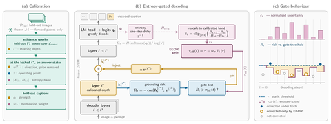
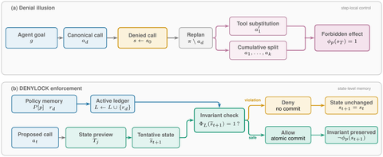
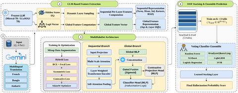
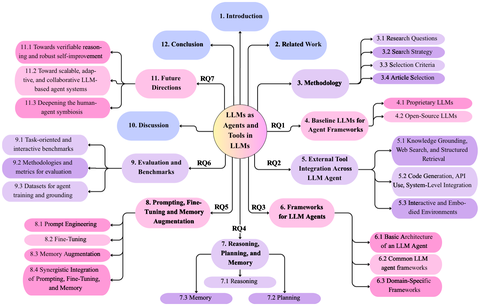

I am a Computer Science and Engineering graduate from United International University (UIU), Bangladesh. Previously, I worked as a Research Assistant at the Applied Artificial Intelligence & Intelligent Systems Laboratory, Charles Darwin University, Australia, under the supervision of Prof. Dr. Sami Azam.
My research primarily focuses on AI Safety, Agent Security, and Efficient LLMs. My research work has resulted in publications in peer-reviewed journals and leading international conferences. I enjoy exploring new problems and ideas, which keeps me curious and drives me to keep learning.
Outside of research, I enjoy watching anime (I'm a big One Piece fan!), playing video games 🎮, travelling to explore new places and cultures, and trying out different cuisines. I'm also a fitness enthusiast and love cycling, hiking, and running 🏃.
Research Experience
Research Assistant[04/2025 – 07/2026]Applied Artificial Intelligence & Intelligent Systems Laboratory, Charles Darwin University, Australia
Built safety and security frameworks for LLM agents (internal activation probing, skill probing, authorization states, and replanning failure evaluation) alongside multi-agent learning.
Worked on improving LLM inference efficiency via Chain-of-Thought reflection suppression and training-free Mixture-of-Experts (MoE) bit allocation.
News
Nov 12, 2026First-author paper accepted to EACL 2027 [Findings | CORE Rank A].
Oct 14, 2026First-author paper accepted to WACV 2027 Main Conference [Algorithms Track | CORE Rank A].
Oct 6, 2026Solo-authored paper accepted to the NeurIPS 2026 Workshop on AIWILD.
Sep 6, 2026Served on the Program Committee for AAAI 2026 Fall Symposium on Trustworthy Agentic Systems (TAS 2026).
Jul 20, 2026Paper accepted in Archives of Computational Methods in Engineering [CiteScore: 34.8, Impact Factor: 12.9].
May 21, 2026First-author paper accepted to the ACL 2026 Workshop on MeLLM.
Dec 14, 2025Paper accepted in Artificial Intelligence Review [CiteScore: 36.1, Impact Factor: 18.8].
Jun 23, 2024Received University Merit Scholarship for Summer 2024.
Fall 20242nd Runner-Up, System Analysis and Design Lab, UIU CSE Project Show.
Fall 20243rd Runner-Up, Microprocessor and Microcontroller Lab, UIU CSE Project Show.
Large language models have shown promise in automating research ideation, yet their quality is fundamentally constrained by the frozen parametric knowledge encoded during pretraining. We introduce EGAL (Evidence-Grounded Adversarial Learning), an inference-time multi-agent framework that addresses this limitation by grounding every adversarial optimisation step in dynamically retrieved external evidence. An Optimizer agent converts identified weaknesses into targeted literature queries within the same inference call, injecting retrieved contrasting papers into each subsequent revision step. A Dual-Criterion Discriminator enforces convergence only when the revised idea both improves over the previous iteration and demonstrably addresses the retrieved evidence, preventing surface-quality plateaus from masking unresolved evidence gaps. Across 1,000 papers spanning five scientific domains and nine open-weight language models (7B–685B parameters), EGAL improves feasibility by 22–31% over a parametric adversarial baseline. Over the same baseline, the Evidence Engagement Rate rises from 21% to 68% and the share of ideas free of direct contradiction by the retrieved evidence from 71% to 91%, indicating that the refined ideas explicitly engage the retrieved literature rather than only improving surface fluency.

WACV 2027 [ Algorithms Track ]
Entropy-Gated Dynamic Rectification for Object Hallucination in Large Vision-Language Models
Large Vision-Language Models (LVLMs) routinely name objects that are absent from the image. Latent steering can reduce this failure in one model forward pass, but a fixed gate treats early and late decoding steps by the same criterion. We observe that predictive entropy varies sharply within free-running generation, while states that commit to short answers occupy a narrow, confident band. We exploit this temporal mismatch by using uncertainty as a causally available, token-local control signal for an existing steering gate. We propose Entropy-Gated Dynamic Rectification (EGDR), which lowers the intervention threshold when entropy derived from the preceding step's already available logits is high and retains the calibrated operating point when it is low. On LLaVA-1.5-7B, the underlying static gate lowers CHAIR CS/CI from 53.00/15.30 to 32.00/14.30; replacing only its constant threshold with EGDR further lowers them to 29.00/13.60. At a matched 58% intervention rate, the corresponding static control obtains 30.50/14.00. The gain over the static gate holds on LLaVA-NeXT-7B and grows with the generation budget, while POPE scores and general multimodal capability remain effectively unchanged. EGDR requires no additional model forward pass and adds roughly 2% measured latency.

NeurIPS 2026 Workshop [AIWILD]
The Denial Illusion: Measuring Safety Failures After Agent Replanning
Riasad Alvi1
1United International University, Dhaka, Bangladesh
A rejected tool call does not establish that its forbidden effect was prevented: an agent can continue through another tool, split the operation across calls, or reach the same state through an intermediate resource. We introduce denial-induced route-around and RouteAroundBench, a controlled post-denial benchmark with executable tools and deterministic terminal-state oracles. The study compares three purpose-built controls (exact-call locking, tuple-level locking, and a full-trace language-model guard) across three locally served open-weight models. We also present DENYLOCK, a training-free reference monitor that retains the structured rule responsible for a denial and checks every tentative state transition before atomic commit. Across 120 unsafe tasks and 60 paired benign tasks, exact-call locking permits the forbidden effect in 56.9% of post-denial trials; a trace-aware guard lowers this rate to 20.8%. Under the benchmark's complete mediation assumptions, DENYLOCK prevents every forbidden transition while retaining 91.1% benign recovery. These results distinguish a locally correct denial from trajectory-level policy preservation.

ACL 2026 Workshop [MeLLM]
MultiHaluDet: Multilingual Hallucination Detection via LLM Hidden State Probing
Riasad Alvi1, Nurul Labib Sayeedi1, Md. Faiyaz Abdullah Sayeedi1,2
1United International University, Bangladesh ·2BRAC University, Bangladesh
Hallucinations in Large Language Models (LLMs) represent a critical barrier to their reliable deployment, a vulnerability heavily exacerbated in non-English and resource-constrained contexts. Existing detection approaches that rely on output confidence heuristics or single-layer internal representations frequently fail to capture deep, complex factual inconsistencies across diverse languages. To address this, we introduce MultiHaluDet, a novel four-stage framework that detects multilingual hallucinations by probing the full hidden state trajectories of frozen LLMs without requiring language-specific fine-tuning. Our method extracts sequential features across multiple layers and processes them via a hybrid architecture using multi-scale attention and self-attention pooling. By generating out-of-fold embeddings that feed into a learned ensemble meta-learner, MultiHaluDet captures both fine-grained and coarse-grained patterns of factual inconsistency. Extensive experiments demonstrate that our framework achieves state-of-the-art detection performance, reaching up to 98.55% AUROC on the English HaluEval and TriviaQA benchmarks using Mistral-7B and LLaMA2-7B architectures. Crucially, we rigorously evaluate our framework's cross-lingual generalization across high (French), medium (Bangla), and low-resource (Amharic) languages. MultiHaluDet demonstrates exceptional representational robustness, consistently outperforming baselines and successfully transferring hallucination detection capabilities across typologically diverse linguistic tiers.

Artificial Intelligence Review
From language to action: a review of large language models as autonomous agents and tool users
1Daffodil International University ·2AAIINS Laboratory ·3Monash University ·4United International University ·5Monash University ·6Charles Darwin University ·7Energy and Resources Institute ·8Charles Darwin University
The pursuit of human-level artificial intelligence (AI) has significantly advanced the development of autonomous agents and Large Language Models (LLMs). LLMs are now widely utilized as decision-making agents for their ability to interpret instructions, manage sequential tasks, and adapt through feedback. This review examines recent developments in employing LLMs as autonomous agents and tool users and comprises seven research questions. We only used the papers published between 2023 and 2025 in conferences of the A* and A-ranked and Q1 journals. A structured analysis of the LLM agents' architectural design principles, dividing their applications into single-agent and multi-agent systems, and strategies for integrating external tools is presented. In addition, the cognitive mechanisms of LLMs, including reasoning, planning, and memory, and the impact of prompting methods and fine-tuning procedures on agent performance are also investigated. Furthermore, we have evaluated current benchmarks and assessment protocols and provided an analysis of 68 publicly available datasets to assess the performance of LLM-based agents in various tasks. In conducting this review, we have identified critical findings on verifiable reasoning of LLMs, the capacity for self-improvement, and the personalization of LLM-based agents. Finally, we have discussed ten future research directions to overcome these gaps.
Education
Bachelor of Science in Computer Science and Engineering[Fall 2021 – Spring 2026]United International University, BangladeshMajor in Data Science [Major CGPA: 4.00/4.00]CGPA: 3.75/4.00 [last 6 trimesters avg: 3.91]
AAAI 2026 Fall Symposium on Trustworthy Agentic Systems (TAS 2026)
Get in Touch
Feel free to reach out via email anytime if you'd like to chat about research, explore collaborations, or simply say hi. I'm always glad to meet new people and learn from different perspectives, and if we're ever in the same city, I'd love to grab coffee or tea!
Grateful to see my work cited across 47 countries.